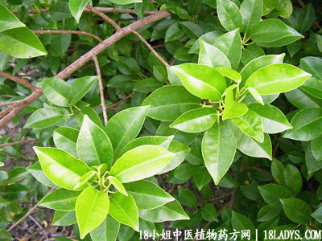

(本文解释权归中药材天地网兄弟站-18小姐中医植物药方网所有,如需转载请注明出处)

别名：鸡脚香、土沉香。
植物名：鸡骨香。
生长环境：本品为矮小灌木，常生于郊野荒地上。
分布：我国南部至越南，泰国、广州郊野旷地上常见。
入药部分：根。
采集期：夏、秋季。
自采地点：山岗。
性味：性温、味微苦、气芳香。
功能：行气、止痛、祛风、消肿祛湿。
主治、用量和用法：1、黄疸：干用1至2两、清水煎服，加猪瘦肉同煎；2、疝气：用法同山个、跌打苦伤，配伍用。
验方：（治跌打苦伤方）鸡骨香5钱、金牛5钱、九层塔5钱、血见愁5钱、透骨消5钱、山白芷5钱、清水四碗，煎成一碗服。
（方解）本方一派活血药、入金牛、九层塔、山白芷活血祛风、血见愁凉血活血，透骨消透骨骼之瘀，加以鸡骨香祛风、止痛，活血、行气，合成走表入里，透骨肉，行气活血之剂。
（方歌）跌打苦伤鸡骨香，行气活血金牛强，配入骨消九层塔，血愁山芷效非常。
(本文解释权归中药材天地网兄弟站-18小姐中医植物药方网所有,如需转载请注明出处)